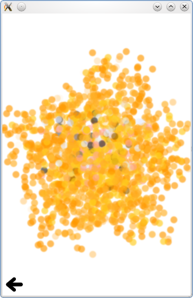

QtQuick.Particles Examples - CustomParticle
This is a collection of examples using CustomParticle in the QML particle system.

This is a collection of small QML examples relating to using CustomParticle in the particle system. Each example is a small QML file emphasizing a different way to use CustomParticle.
Blur Particles adds a blur effect to the particles, which increases over the particle's life time. It uses a custom vertex shader:
to propagate life time simulation to a custom fragement shader:
which has access to both the normal image sampler and a blurred sampler, the image plus a ShaderEffect.
Fragment Shader just uses the particle system as a vertex delivery system.
Image Colors uses CustomParticle to assign colors to particles based on their location in a picture. The vertex shader,
passes along the starting position for each vertex to the fragment shader,
which uses it to determine the color for that particle.
Files:
- particles/customparticle/customparticle.qml
- particles/customparticle/content/blurparticles.qml
- particles/customparticle/content/fragmentshader.qml
- particles/customparticle/content/imagecolors.qml
- particles/customparticle/main.cpp
- particles/customparticle/customparticle.pro
- particles/customparticle/customparticle.qmlproject
- particles/customparticle/customparticle.qrc